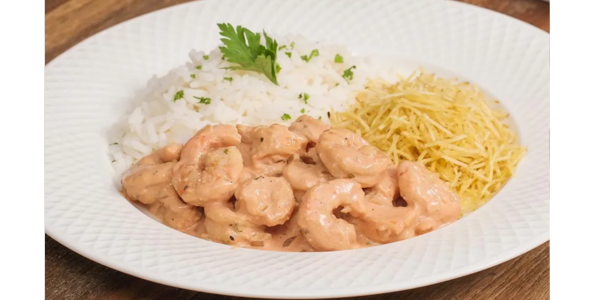

RECEITA - STROGONOFF DE CAMARÃO
INGREDIENTES
- 500 gramas de camarão cinza ou rosa
- 1 colher de sobremesa rasa de margarina
- 1 cebola picada
- 2 dentes de alho picado
- 1 pitada de orégano
- 1 pitada de sal
- Pimenta-do-reino a gosto
- 1 xícara de molho de tomate
- 1 colher de sopa de mostarda
- 1 lata de creme de leite sem soro
MODO DE PREPARO
- Retire a cabeça e as cascas do camarão, limpe e reserve.
- Em uma panela, coloque 1 colher de sobremesa de manteiga e deixe derreter.
- Em seguida, adicione 1 cebola picada e 2 dentes de alho picado. Refogue.
- Depois, coloque os camarões e adicione 1 pitada de orégano, 1 pitada de sal e pimenta-do-reino a gosto. Misture.
- Acrescente 1 xícara de molho de tomate, 1 colher de sopa de mostarda e misture novamente.
- Desligue o fogo, adicione 1 lata de creme de leite sem soro e misture.
- Sirva em seguida.
Voltar